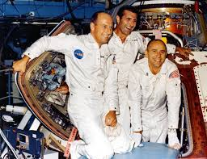

James McDivitt was one of NASA's most experienced astronauts before Apollo 9. He commanded Gemini 4, the mission during which Ed White performed America's first spacewalk.
As commander of Apollo 9, McDivitt oversaw the first crewed test of the Lunar Module. His mission demonstrated that the spacecraft could operate independently in orbit, a critical requirement for future Moon landings.
McDivitt's leadership helped transform the Lunar Module from a promising design into a proven spacecraft capable of carrying astronauts to the lunar surface.
David Scott served as Command Module Pilot during Apollo 9 and later commanded Apollo 15. Before Apollo 9, he flew on Gemini 8 alongside Neil Armstrong, where the crew successfully managed a dangerous spacecraft emergency.
During Apollo 9, Scott remained aboard the Command Module while his crewmates tested the Lunar Module. He conducted docking operations and helped prove that the two spacecraft could safely separate and reunite in orbit.
Scott later became the seventh person to walk on the Moon and one of the most accomplished explorers of the Apollo era.
Russell Schweickart played a central role in Apollo 9's testing of the Lunar Module. During the mission, he conducted a spacewalk that helped evaluate equipment and procedures later used during lunar missions.
His work demonstrated that astronauts could safely move between spacecraft and operate outside their vehicles in preparation for future Moon landings.
Although Apollo 9 was his only spaceflight, Schweickart's contributions were essential to validating the systems and techniques that Apollo astronauts would later use on the Moon.